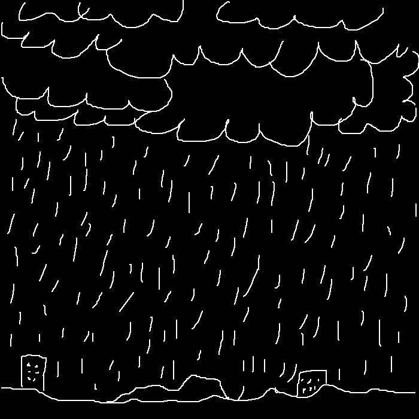

大雨

昨晚，我梦到了一场大雨。
起初，天空只是阴沉得有些反常，风在无人的街角打着旋，像在酝酿什么。然后，第一道雷声轰然炸开，乌云从地平线的尽头滚滚压来。
那不是云，而像是天穹被掀翻的巨浪。
雨开始下了。起初是密密的细线，接着便成了倾泻的瀑布，整片天空似乎在崩塌。雨水不是从天上落下，而是从四面八方涌来，像整座海洋被倒扣在世界之上。街道被迅速淹没，汽车被吞噬，楼宇变成孤零零的岛屿。我透过窗看着那一切，心中竟没有恐惧，只有一种奇异的宁静——仿佛一直存在于我耳边的喧嚣终于被冲刷干净。
很快，大陆的轮廓被抹去，海平面重新绘制了世界。雨下了很久，久到我忘记了时间的流动。直到最后一滴雨珠落下，世界忽然静止。云层缓缓散开，星光像潮水般涌来。那一刻，夜空明亮得不真实，钻石般的星子洒满天幕，连呼吸都似乎能泛出微光。
我抬头看去，熟悉的星座全都不见了，取而代之的是由新的群星组成陌生的图案，在高空缓缓旋转。曾经是摩天大楼的地方，如今长满了原始的蕨类植物，在星辉下静静舒展嫩芽。
空气潮湿、清新，世界像是被重生了一次。